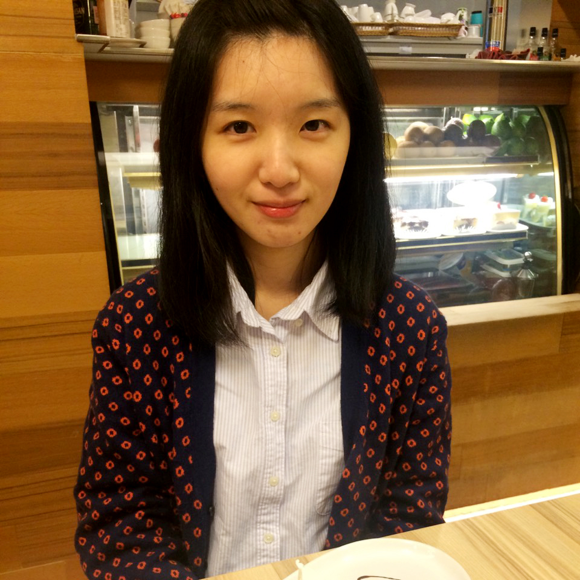

Tin Yu, Yang
楊庭育

sdfe996@gmail.com
+886-919-985-688
-
OBJECTIVE
我的個性認真負責，當課業與工作遇到困難時，常常會用不同的角度思考，仔細尋找出適當的解決方法，期許自己保持在正面、積極的態度。
我會適時利用課餘時間尋求相關的工讀和實習機會，「真積力久則入，學至乎沒而後止」在過程中學習別人的長處，累積成自己的經驗，從中得到寶貴的經驗！
珍惜在生活中所接觸到的人、事、物，並且努力達成自己所設定的目標，相信處處都是成長的寶典。
To obtain a full time job position in design studio, which will utilize my strong bilingual competence.
It is believed that being passionate, self-motivated, devoted will help me excel in the position.
EDUCATION
國立臺灣藝術大學 National Taiwan University of Arts
圖文傳播藝術學系 Bachelor of Graphic Communication Arts
Relevant Coursework:
基本設計 Basic Design
數位出版 Digital Publishing
雜誌與報紙出版 Magazine and newspaper design and publishing
SKILLS
COMPUTER:
Word
Excel
PowerPoint
Illustrator
PhotoShop
Indesign
LANGUAGE:
Fluent in Chinese
English
EXPERIENCE
專員, 聯合線上
實習生, 國立故宮博物院 Intern, National Palace Museum, Taiwan